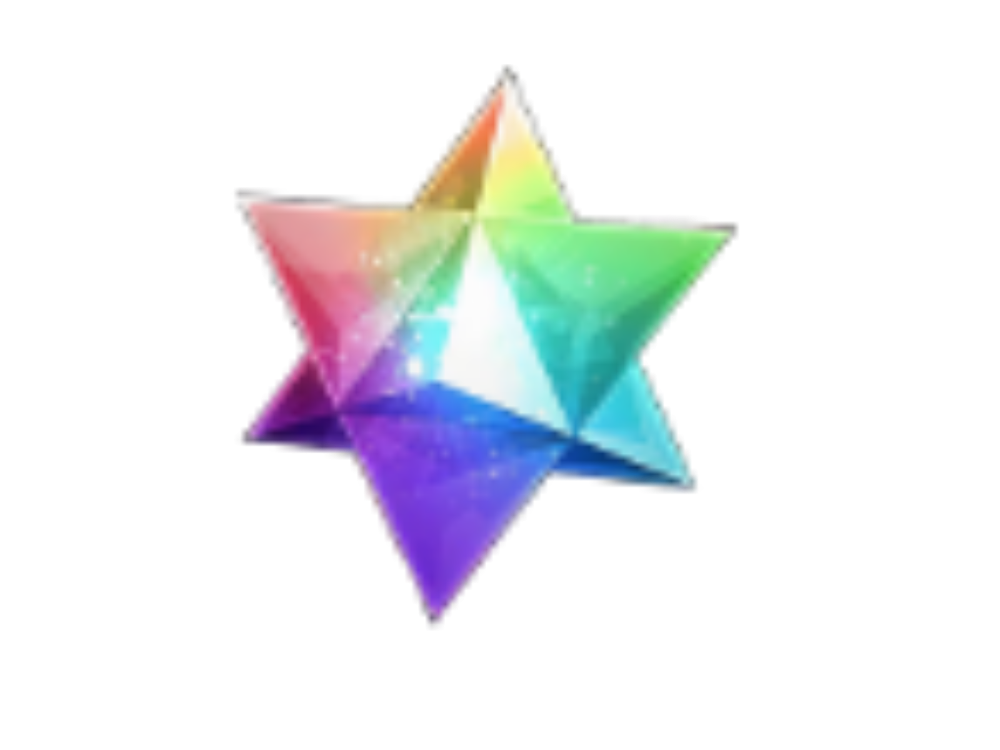
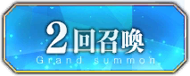
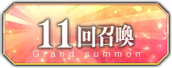

Chaldea Summon Room
常駐卡池
1st Anniversary 推薦召喚
大奧：新章 應援召喚
百花繚亂大奧風雲─娑婆局嘆息─ 推薦召喚1
百花繚亂大奧風雲─娑婆局嘆息─ 推薦召喚2
雙生：異端絕種禁區 原宿 推薦召喚1
雙生：異端絕種禁區 原宿 推薦召喚2
雙生：異端絕種禁區 原宿 推薦召喚3
雙生：羔羊不語聖家 耶路撒冷 推薦召喚1
雙生：羔羊不語聖家 耶路撒冷 推薦召喚2
雙生：羔羊不語聖家 耶路撒冷 推薦召喚3
仿篇敘述 Replica 應援召喚
仿篇敘述I 越界證明起點 冬木2035 推薦召喚1
仿篇敘述I 越界證明起點 冬木2035 推薦召喚2
福袋召喚
初始數量設定：
決定

0
補充數：
1
5
18
41
76
167
補充


統計面板
召喚履歷